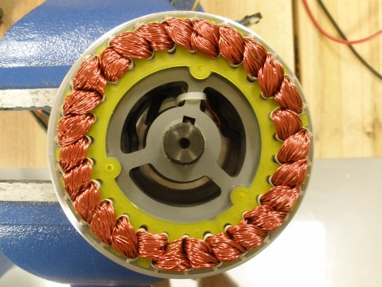
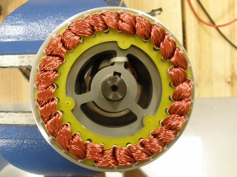

Joshua Sealand
recent
- speaker boxes
- quadcopter
- easy assemble 18650 batterie packs
projects
December 2016
- audio amplifier - My partner and I built a 10W class A audio amplifier based on the JLH design for our final project in E151: Engineering Electronics.
September 2016
July 2016
April 2016
- electric longboard - I finally finished rebuilding my eboard, but I broke the motor after just a week of riding...
October 2014
- kick scooter - I built a custom kick scooter that fit my 6'8" frame. By the time I finished it, I had learned to longboard, but building the scooter was still a great learning experience.
May 2013
- hubbike - I built a hubmotor ebike because I didn't like the noise of my rcbike.
August 2012
- rcbike - In high school, I motorized my mountain bike with a brushless motor designed for large model airplanes.
work and research
Fall 2016
Summer 2016
-
I helped with the hardware development for HMC's new E79: Introduction to Engineering Systems course. I worked with three other students and several professors to help develop the hardware for a new set of lab practicums based on small PVC pipe underwater vehicles.
Spring 2016
- I worked with the Whistle clinic team on implementing ambient temperature monitoring in their pet monitoring device.
Summer 2015
- I taught at a summer engineering camp for high schoolers in Denver, Colorado called BlueStamp Engineering. Students designed their own projects ranging from laser harps to self balancing robots, and then I, along with a couple other counselors, would help them as they constructed them.
running
CMS Stags
- Cross country
- 8K PR is 24:39 from EP "Tom" Sawyer Park in Louisville, KY
- All-American (13th) in 2016, helped Stags to 5th place team finish
- Track
- PRs: 1500 - 3:47, 5000 - 14:23
- All-American (6th and 7th) in 1500 in 2015 and 2016, competed in 5000 at Nationals as well in 2015 and 2016
 



{kind=link}
{kind=link}